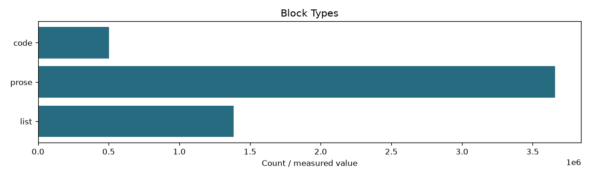
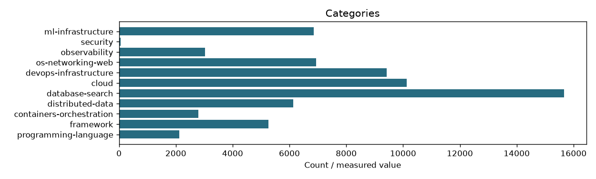
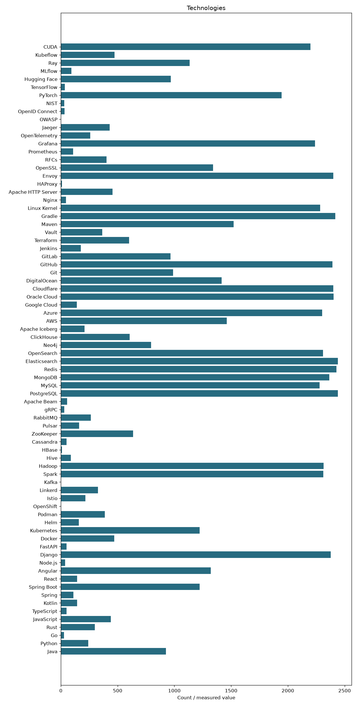

| fingerprint | f15488c8b98dc3f6f7f38152db2226dfef073173cd184609831edea290884f26 |
|---|---|
| policy | Prepared data snapshot; no neural-side filtering |
| source_documents | 68414 |
| retained_documents | 68414 |
| code_documents | 40303 |
| extracted_characters | 540845114 |
| blocks | 5549609 |
| seconds | 95.69 |
| dataset_manifest_sha256 | 20cc401c26cf7144238dd0d55826ed39741ff58600f13235c2f7d80237dfe02a |
| extractor_sha256 | 28b717813eb2f0c68adca316ce134374b03299a147340d30adeaea0a1a9c8818 |


